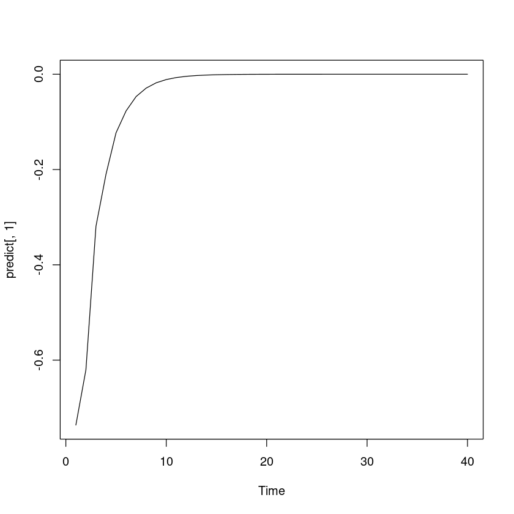

library(GNAR)GNAR
Model | FiveVTS | Chickenpox | Pedalme | Wikimath | Windmillsmall | MontevideoBus |
fiveVTS0<-fiveVTSn<-(length(fiveVTS0[,1])*0.8)
nlags<-(length(fiveVTS0[,1])*0.8)-2fiveVTS0[sample(c(1:nlags), size = 0.3 * n),1] <- NA
fiveVTS0[sample(c(1:nlags), size = 0.3 * n),2] <- NA
fiveVTS0[sample(c(1:nlags), size = 0.3 * n),3] <- NA
fiveVTS0[sample(c(1:nlags), size = 0.3 * n),4] <- NA
fiveVTS0[sample(c(1:nlags), size = 0.3 * n),5] <- NAnafit <- GNARfit(vts = fiveVTS0[1:160,], net = fiveNet, alphaOrder = 2, betaOrder = c(1, 1))predict<- predict(nafit,n.ahead = 40)
head(predict)| Series 1 | Series 2 | Series 3 | Series 4 | Series 5 |
|---|---|---|---|---|
| -0.97639279 | 0.241614109 | 0.174537938 | -0.17350937 | -1.36886707 |
| -0.49231754 | 0.039523956 | 0.043116491 | -0.10898089 | -0.64489769 |
| -0.24308640 | -0.007812236 | -0.008004649 | -0.07678112 | -0.31780000 |
| -0.12485799 | -0.019603268 | -0.019592963 | -0.04980972 | -0.15681519 |
| -0.06498647 | -0.018195074 | -0.018195626 | -0.03175021 | -0.07950193 |
| -0.03462597 | -0.013759023 | -0.013758994 | -0.01977786 | -0.04103494 |
(predict[,1] - ts(fiveVTS0[151:200,1]))**2
A Time Series:
- 5.58799142878491
- 0.666965936416604
- 0.159809063293537
- <NA>
- 0.00629188488278831
- 0.337957697581599
- <NA>
- 0.0282212014797316
- 0.0820240071704887
- 5.31407494055649
- 1.89861101707401
- 0.471539906296974
- 0.519313859990452
- 0.520226772784529
- 1.57787754873223
- 2.90999783956481
- 1.54063047709504
- 3.00519315533831
- 0.628067859074328
- 1.71210536909797
- 0.0229105680673379
- 2.07631869538371
- 0.363194271357353
- 1.62629234903699
- 1.97255528389458
- 0.430600847795843
- 0.155353902033888
- 0.888562415318064
- 0.000539626024893533
- 0.133740154132464
- 2.93851790947897e-05
- 0.000623092051748548
- 0.684606311618659
- 0.199387537472046
- 0.727258122881312
- 0.297083148986031
- 1.53152479927919
- 0.160478681230306
- 0.119736781238533
- 0.0588538252162804
ts(fiveVTS0[151:200,1])
A Time Series:
- 1.38750049162408
- 0.324362289439763
- -0.642847662295262
- <NA>
- -0.14430787604546
- 0.546715317493225
- <NA>
- -0.178360097916621
- -0.292207540157746
- -2.30852414877782
- -1.37979103173847
- -0.687780533435674
- 0.719998168522977
- 0.720895215996944
- 1.25591724610612
- 1.70574267686919
- -1.24129751477714
- -1.73359436186417
- 0.792480615392693
- -1.30849028854218
- -0.151371780816588
- -1.44094927084689
- -0.602659335556662
- 1.27525970399717
- -1.40447804622763
- -0.656202533069454
- -0.394150008933574
- 0.942635639757677
- -0.0232299990766641
- 0.365704922218769
- -0.00542086188327778
- 0.0249617808876408
- 0.827409379395341
- 0.446528305569579
- -0.852794309324289
- 0.545053341197971
- -1.23754790008359
- -0.400597906051167
- -0.346030030207122
- -0.242598073884934
- 1.90692732958981
- 0.24755601276494
- 0.109182478356391
- -0.428068354558935
- -2.39169609312685
- -2.21077486518177
- -0.722601931885225
- -2.93859071485278
- -0.985951916349864
- 0.447242608669382
sum((fiveVTS0[161:200,1] - predict[,1])**2)
50.3789293250082
plot(predict[,1])